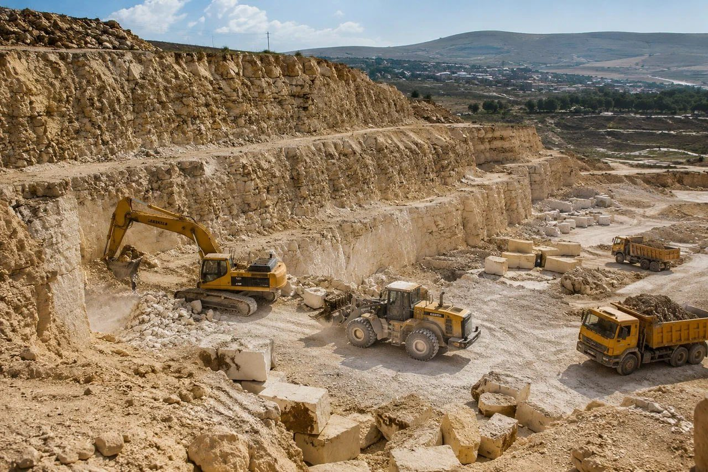

Работаем с источником камня и знаем происхождение материала.
НАТУРАЛЬНЫЙ ДАГЕСТАНСКИЙ КАМЕНЬ
Камень, который
создаёт характер
дома.
Отбираем камень у проверенных поставщиков и превращаем его в фасад, который останется частью вашей истории.
ЛИСТАЙТЕ ВНИЗ
01 — 04
01 — НАШ ПОДХОД
От горного камня
до готового фасада.
Натуральный камень — материал с собственным рисунком, фактурой и характером. Мы бережно раскрываем его красоту и точно воплощаем архитектурную задумку.
Узнать о работах ↗
ПОЛНЫЙ ЦИКЛОт выбора
камня до монтажа
камня до монтажа
Один партнёр отвечает за материал, логистику и результат на объекте.
Как мы работаем ↗02/04
02 — ЧТО МЫ ДЕЛАЕМ
Работаем с камнем.
Создаём надолго.
Для частных домов, коттеджей и коммерческих объектов — от выразительной детали до полного фасада.
01Облицовка фасадаНатуральный камень · монтаж под ключ↗02Каменный цокольЗащита и выразительная архитектура↗03Декор фасадаОбрамления, углы, архитектурные акценты↗04Интерьер и мощениеКаменные акценты внутри и снаружи↗
Все направления ↗03 — НАША ОПОРА
Красота,
проверенная временем.
Организуем доставку материала до вашего объекта.
За качество работ отвечает наша команда мастеров.
Предоставляем гарантийное обслуживание выполненных работ.
КАМЕНЬ С ХАРАКТЕРОМ · 2026
ВАШ ДОМ ЗАСЛУЖИВАЕТ НАСТОЯЩЕГО
Обсудить задачу ↗